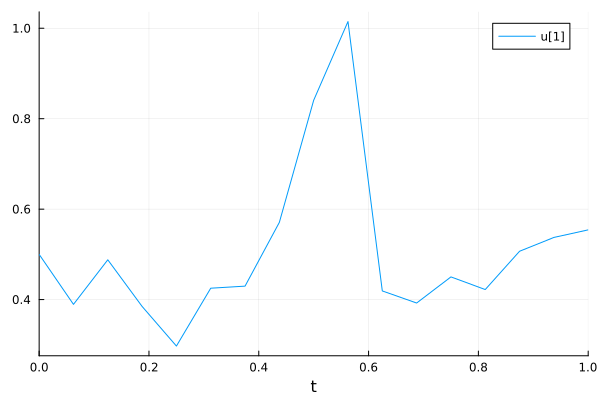
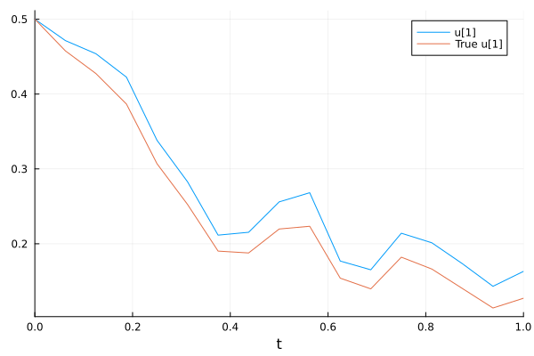
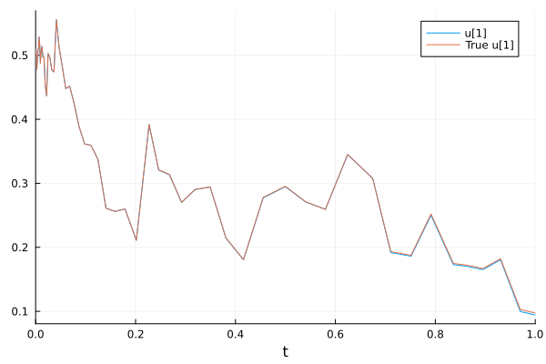
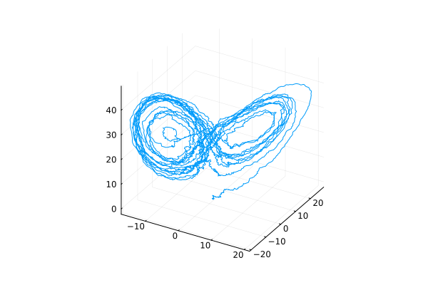
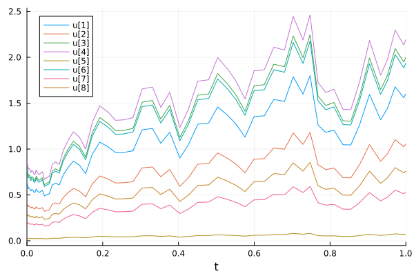
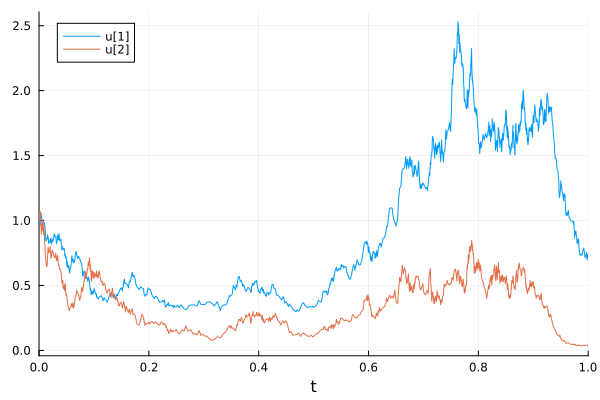
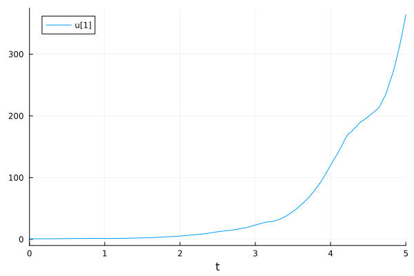
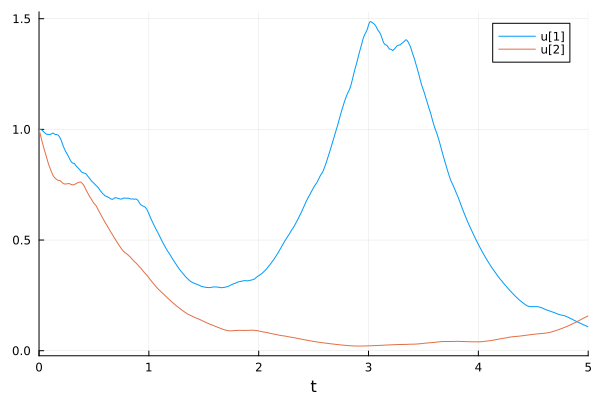

Stochastic Differential Equations (SDEs)#
Stochastic Differential Equations (SDEs)#
Recommended SDE solvers: https://docs.sciml.ai/DiffEqDocs/stable/solvers/sde_solve/
Scalar SDEs with one state variable#
Solving the equation: \(du=f(u,p,t)dt + g(u,p,t)dW\)
\(f(u,p,t)\) is the ordinary differential equations (ODEs) part
\(g(u,p,t)\) is the stochastic part, paired with a Brownian motion term \(dW\).
using StochasticDiffEq
using Plots
ODE function
f = (u, p, t) -> p.α * u
#1 (generic function with 1 method)
Noise term
g = (u, p, t) -> p.β * u
#3 (generic function with 1 method)
Setup the SDE problem
p = (α=1, β=1)
u0 = 1 / 2
dt = 1 // 2^(4)
tspan = (0.0, 1.0)
prob = SDEProblem(f, g, u0, (0.0, 1.0), p)
SDEProblem with uType Float64 and tType Float64. In-place: false
Non-trivial mass matrix: false
timespan: (0.0, 1.0)
u0: 0.5
Use the classic Euler-Maruyama algorithm to solve the problem
sol = solve(prob, EM(), dt=dt)
retcode: Success
Interpolation: 1st order linear
t: 17-element Vector{Float64}:
0.0
0.0625
0.125
0.1875
0.25
0.3125
0.375
0.4375
0.5
0.5625
0.625
0.6875
0.75
0.8125
0.875
0.9375
1.0
u: 17-element Vector{Float64}:
0.5
0.3894382720786972
0.48799500547537195
0.3848918320757936
0.29723531400131864
0.4251692157765765
0.4297419984662797
0.5707891396565355
0.8406775249187365
1.0148486162493353
0.4191396852596596
0.3923874665378764
0.4501588879003524
0.4222080009500096
0.5068852746513837
0.5374367707001276
0.5542057391504811
Visualize
plot(sol)

The analytical solution: If \(f(u,p,t) = \alpha u\) and \(g(u,p,t) = \beta u\), the analytical solution is \(u(t, W_t) = u_0 exp((\alpha - \frac{\beta^2}{2})t + \beta W_t)\)
f_analytic = (u0, p, t, W) -> u0 * exp((p.α - (p.β^2) / 2) * t + p.β * W)
ff = SDEFunction(f, g, analytic=f_analytic)
prob = SDEProblem(ff, g, u0, (0.0, 1.0), p)
SDEProblem with uType Float64 and tType Float64. In-place: false
Non-trivial mass matrix: false
timespan: (0.0, 1.0)
u0: 0.5
Visualize numerical and analytical solutions
sol = solve(prob, EM(), dt=dt)
plot(sol, plot_analytic=true)

Use a higher-order adaptive solver SRIW1() for a more accurate result
sol = solve(prob, SRIW1())
plot(sol, plot_analytic=true)

SDEs with diagonal Noise#
Each state variable are influenced by its own noise. Here we use the Lorenz system with noise as an example.
using StochasticDiffEq
using Plots
function lorenz!(du, u, p, t)
du[1] = 10.0(u[2] - u[1])
du[2] = u[1] * (28.0 - u[3]) - u[2]
du[3] = u[1] * u[2] - (8 / 3) * u[3]
end
function σ_lorenz!(du, u, p, t)
du[1] = 3.0
du[2] = 3.0
du[3] = 3.0
end
prob_sde_lorenz = SDEProblem(lorenz!, σ_lorenz!, [1.0, 0.0, 0.0], (0.0, 20.0))
sol = solve(prob_sde_lorenz, SRIW1())
plot(sol, idxs=(1, 2, 3), label=false)

SDEs with scalar Noise#
The same noise process (W) is applied to all state variables.
using StochasticDiffEq
using DiffEqNoiseProcess: WienerProcess
using Plots
Exponential growth with noise
f = (du, u, p, t) -> (du .= u)
g = (du, u, p, t) -> (du .= u)
#9 (generic function with 1 method)
Problem setup
u0 = rand(4, 2)
W = WienerProcess(0.0, 0.0, 0.0)
prob = SDEProblem(f, g, u0, (0.0, 1.0), noise=W)
SDEProblem with uType Matrix{Float64} and tType Float64. In-place: true
Non-trivial mass matrix: false
timespan: (0.0, 1.0)
u0: 4×2 Matrix{Float64}:
0.619225 0.0277224
0.406819 0.748828
0.773327 0.203883
0.847493 0.294213
Solve and visualize
sol = solve(prob, SRIW1())
plot(sol)

SDEs with Non-Diagonal (matrix) Noise#
A more general type of noise allows for the terms to linearly mixed via noise function g being a matrix.
using StochasticDiffEq
using Plots
f = (du, u, p, t) -> du .= 1.01u
g = (du, u, p, t) -> begin
du[1, 1] = 0.3u[1]
du[1, 2] = 0.6u[1]
du[1, 3] = 0.9u[1]
du[1, 4] = 0.12u[1]
du[2, 1] = 1.2u[2]
du[2, 2] = 0.2u[2]
du[2, 3] = 0.3u[2]
du[2, 4] = 1.8u[2]
end
u0 = ones(2)
tspan = (0.0, 1.0)
(0.0, 1.0)
The noise matrix itself is determined by the keyword argument noise_rate_prototype
prob = SDEProblem(f, g, u0, tspan, noise_rate_prototype=zeros(2, 4))
sol = solve(prob, LambaEulerHeun())
plot(sol)

Random ODEs#
https://docs.sciml.ai/DiffEqDocs/stable/tutorials/rode_example/
Random ODEs (RODEs) is a more general form that allows nonlinear mixings of randomness.
\(du = f(u, p, t, W) dt\) where \(W(t)\) is a Wiener process (Gaussian process).
RODEProblem(f, u0, tspan [, params]) constructs an RODE problem.
The model function signature is
f(u, p, t, W)(out-of-place form).f(du, u, p, t, W)(in-place form).
using StochasticDiffEq
using Plots
Scalar RODEs
u0 = 1.00
tspan = (0.0, 5.0)
prob = RODEProblem((u, p, t, W) -> 2u * sin(W), u0, tspan)
sol = solve(prob, RandomEM(), dt=1 / 100)
plot(sol)

Systems of RODEs
function f4(du, u, p, t, W)
du[1] = 2u[1] * sin(W[1] - W[2])
du[2] = -2u[2] * cos(W[1] + W[2])
end
u0 = [1.00; 1.00]
tspan = (0.0, 5.0)
prob = RODEProblem(f4, u0, tspan)
sol = solve(prob, RandomEM(), dt=1 / 100)
plot(sol)

This notebook was generated using Literate.jl.